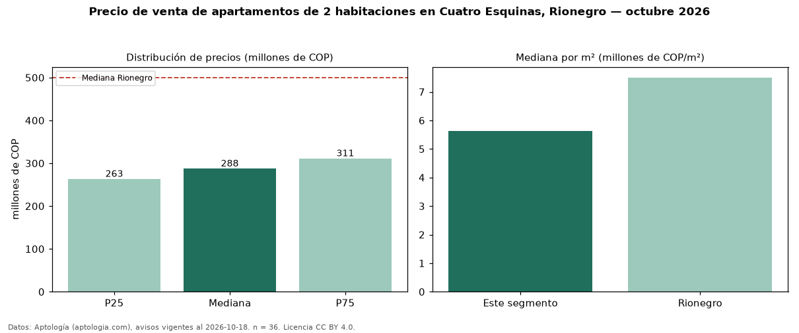

Precio de venta de apartamentos de 2 habitaciones en Cuatro Esquinas, Rionegro — octubre 2026
Con 36 avisos vigentes, el precio mediano de apartamentos de 2 habitaciones en venta en Cuatro Esquinas, Rionegro es COP 288 millones. Eso es 43 % por debajo de la mediana de Rionegro para apartamentos de 2 habitaciones (COP 500 millones). Por metro cuadrado, la mediana es COP 5,63 millones/m² (n = 36 avisos con área), 25 % por debajo de Rionegro (COP 7,50 millones/m²). Son 65 % de los 55 avisos de apartamentos en venta de la zona, cuya mediana general es COP 295 millones (−3 %). El área mediana anunciada es 51 m². La administración mediana declarada es COP 220.000 al mes (n = 21). El estrato más frecuente es 3 (55 % de los avisos con estrato). La mitad central de los avisos va de COP 263 millones a COP 311 millones (razón 1,2), una dispersión baja. Datos: Aptología (aptologia.com), CC BY 4.0 — https://www.aptologia.com/venta/rionegro/cuatro-esquinas. Archivos: PDF, CSV con las cifras y gráfica PNG.

| Avisos únicos | 36 |
|---|---|
| Percentil 25 | COP 263.250.000 |
| Mediana | COP 287.500.000 |
| Percentil 75 | COP 311.250.000 |
| Mediana por m² | COP 5.626.156 |
Fuente: avisos vigentes de portales inmobiliarios recopilados por Aptología, deduplicados (mínimo 30 avisos únicos por celda). Precios pedidos, no cerrados. Fecha: 2026-10-18.